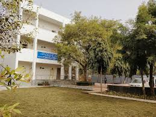
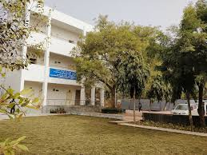
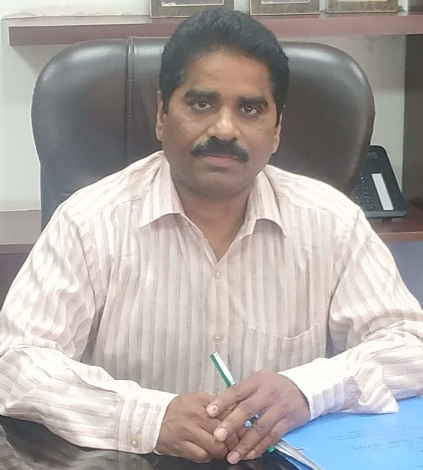

GOVT. OF NCT OF DELHI |
RAJOKARI INSTITUE OF TECHNOLOGY |
DIRECTORATE OF TRAINING & TECHNICAL EDUCATION |
| Home | About us | Course | Staff | Facility | Gallery | RTI |
 

From the Principle's Pen |
|  |
Technical Education aims to provide the right environment to grow beyond academics, to master theory and provide platform for practical aspects that will help the students to move towards concrete goals. As a principal, I wish to provide every student the right platform of opportunities that fosters academics and co-curricular learning. It is an honor to introduce Rajokari Institute of Technology as first fully air-conditioned technical institute under the Department of Training and Technical Education, Govt. of NCT of Delhi. I welcome all the students in the sphere of this institute with deep sense of pride and gratitude. The first academic session of this institute commenced w.e.f. August 2016 with two branches namely, Computer Engineering(CE) and IT Enabled Services and Management (ITESM) with an intake of 60 in each branch. In the coming years, Rajokari Institute of Technology will be known as first Hi-Tech Institute with World-Class facilities. I ensure that I along with my staff members will put our best efforts to ensure that the students are adequately placed in Top MNCs. With Best Wishes, Porusu Ramanaiah PRINCIPAL |
|